TiTi interjero dizainerių studijosDar būdamas mokyklos suole išmokau dirbti su ArchiCAD programine įranga pas architektą Dalių Regelskį. Mokiausi, kaip braižomi techniniai brėžiniai, ir sukūriau pirmąsias vizualizacijas.
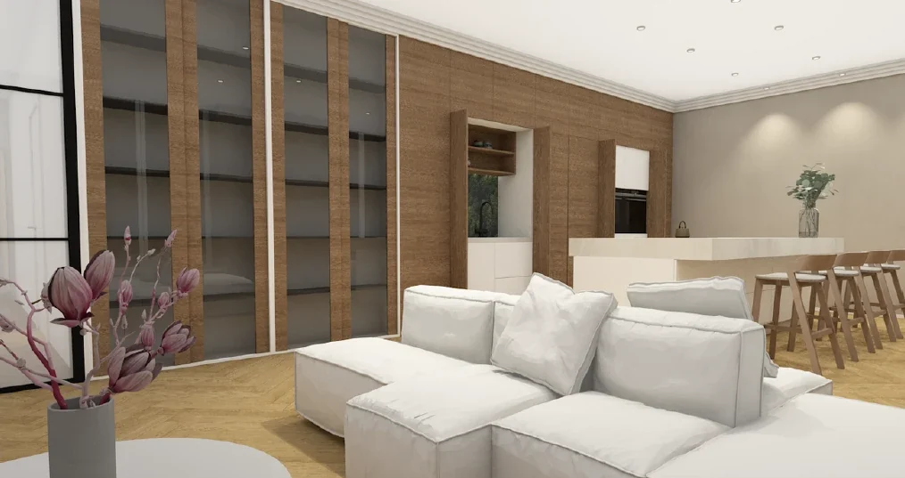
Susipažinkime
Esu diplomuotas interjero dizaineris Steponas Nemira. Turiu realios patirties įgyvendinant interjero dizaino projektus, bendraujant su užsakovais, išsiaiškinant jų lūkesčius bei poreikius. Prisidėjau ir prie visuomeninių pastatų renovacijų: mokyklų, poliklinikų, kalėjimo, hidroelektrinės ir motobolo stadiono. Rengiu techninius brėžinius ir kuriu 3D vizualizacijas.
O jei kalbėtume apie mane kaip apie asmenybę, esu žingeidus, linksmas ir nuoširdus žmogus, kuriuo galima pasitikėti. Pagrindinė vertybė, kuria vadovaujuosi gyvenime, yra abipusė pagarba.
Laisvalaikiu gilinuosi į dirbtinį intelektą ir tyrinėju, kaip jį pritaikyti dizaino procese.
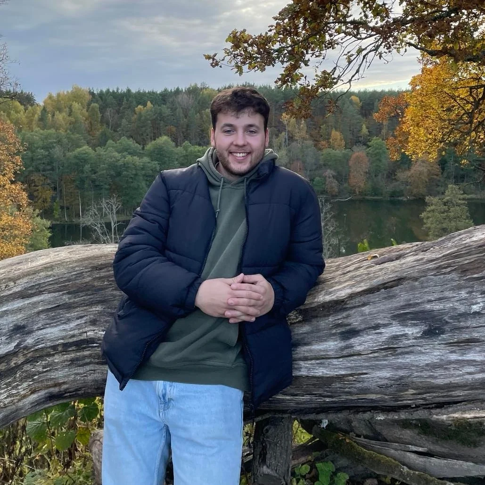
4 studijų etapai · 6 konkursai · 9 asmeniniai įgyvendinti projektai
2017Dabar
· · ·
·
TiTi interjero dizainerių studijosDar būdamas mokyklos suole išmokau dirbti su ArchiCAD programine įranga pas architektą Dalių Regelskį. Mokiausi, kaip braižomi techniniai brėžiniai, ir sukūriau pirmąsias vizualizacijas.

Buto vizualizacijos KlaipėdojeButo interjero vizualizacijos.
Dviejų kambarių atnaujinimasDviejų kambarių interjero atnaujinimas nuo idėjos iki įgyvendinimo.
Namo interjero projektas BendoriuoseNamo interjero projektas: planai, apdailos medžiagos ir baldai.
VGTU Jaunojo architekto studijosArchitektūrinis piešimas ir žinios apie architektūrą bei planavimą.
VTDK, interjero dizainerio specialybėDiplomuoto interjero dizainerio kvalifikacija.
Namo interjero projektas SalininkuoseTrijų aukštų namą su mansarda perprojektavau į mažesnius butus, skirtus nuomai.
Structum „Viešbučio erdvė: rytojaus tendencijos šiandien“Konkursinis darbas išspausdintas žurnale 2022 m. gruodį.
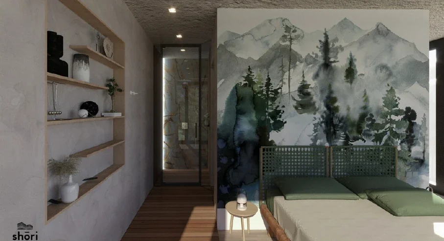
Rambyno muziejaus atnaujinimo konkursasKoncepcinis muziejaus interjero atnaujinimo projektas, parengtas pagal muziejaus poreikius ir mano idėjas.
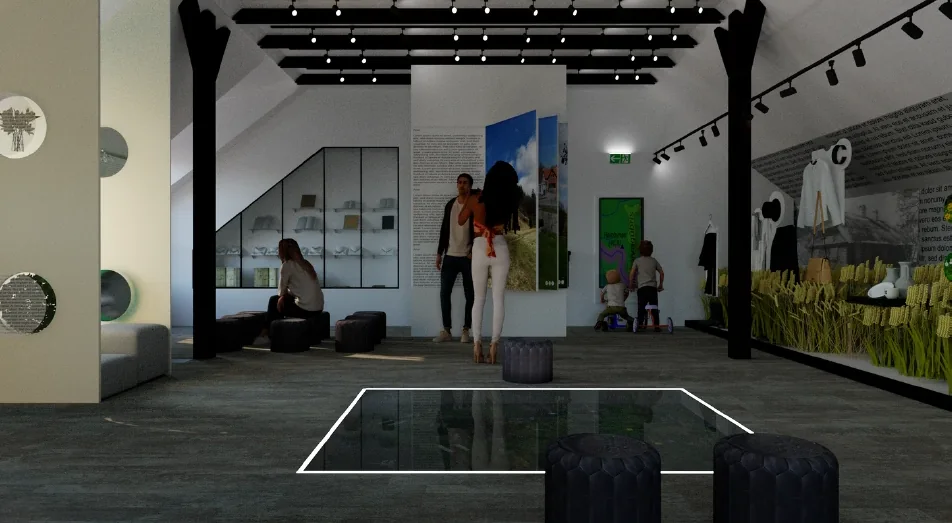
Ekspoziciniai stendai su „Expoera“Stendai Lietuvos įmonėms užsienio parodose.
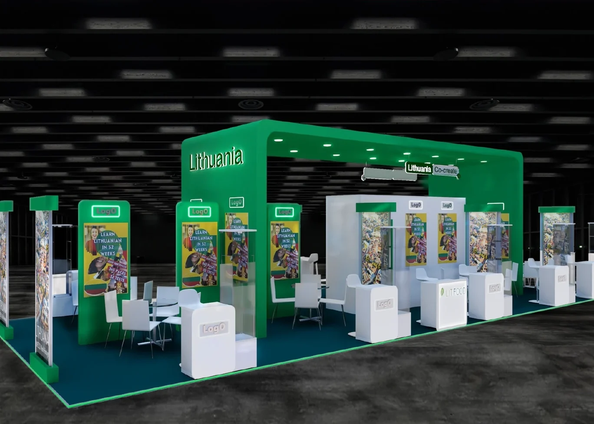
Techninis projektas, Bubų g.Techninių brėžinių komplektas: planai, pjūviai, išklotinės.
Techninis projektas, Karaliaučiaus g.Elektros ir santechnikos brėžiniai.
Buto interjero projektas KaunePardavimui skirto buto projektas nuo idėjos iki įgyvendinimo.
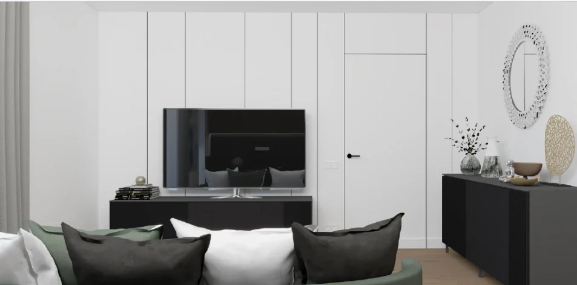
Dielektrik įmonės interjerasBendradarbiaujant su dizainere Lidia, senas veterinarijos pastatas po kapitalinio remonto virsta moderniu Dielektrik įmonės biuru.
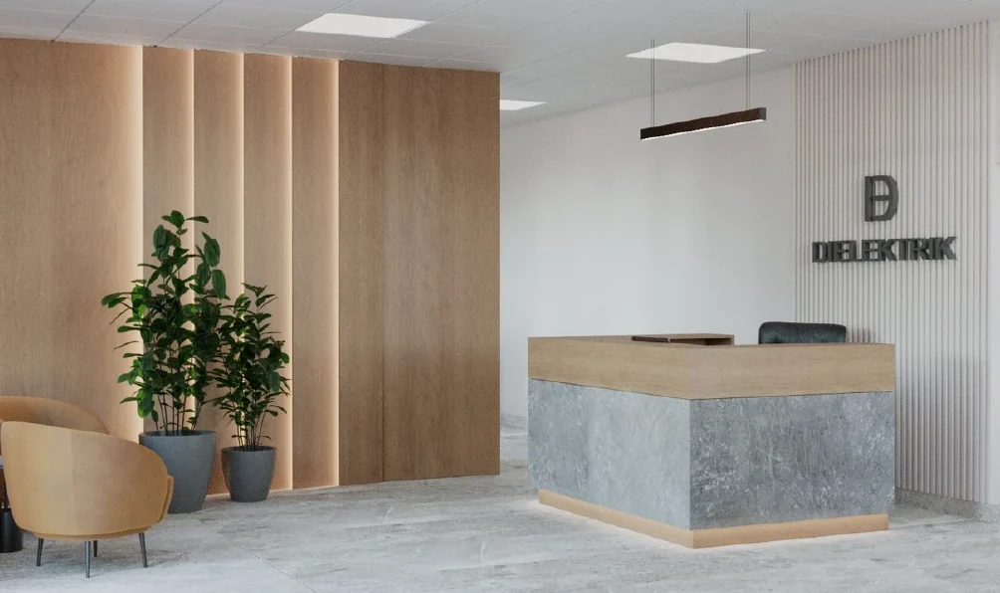
Konkursai
Structum co-living biurasGyvenimo ir darbo erdvės koncepcija, sukurta kartu su kolege. Laimėjome „Tikkurila“ nominaciją.
JAVAD exhibition boothParodos stendo koncepcija.
Antalis „Dininghall 3D“Valgyklos erdvė trimatėje vizualizacijoje.
Structum „Išmanusis miestas 9“Architektūrinės idėjos Molėtų miesto sklypui.
Darbas studijose
Sauliaus Remeikos dizaino studijaVisuomeninių pastatų, tokių kaip mokyklos, poliklinikos, kalėjimas, hidroelektrinė ir motobolo stadionas, interjero renovacijos. Buvau SA techninės dalies specialistas, braižiau techninius brėžinius ir bendravau su subrangovais bei konstruktoriais.Projektai konfidencialūs, todėl vaizdų viešai nerodau. Apie juos mielai papasakosiu susitikimo metu.
Dizainerės asistentas ir partnerisMetus dirbau dizainerės studijoje. Matavau objektus, rengiau techninę, apdailos ir baldų dalis, modeliavau su SketchUp, bendravau su klientais, prižiūrėjau darbus objektuose ir ieškojau apdailos medžiagų salonuose.Projektai konfidencialūs, todėl vaizdų viešai nerodau. Apie juos mielai papasakosiu susitikimo metu.
Skaitmeninių produktų kūrimasUžsienio rinkos dizaineriams ir nekilnojamojo turto agentams su Showit, Figma ir Canva kūriau internetines svetaines, „yard sign“ lenteles, reklamjuostes ir lankstinukus. Rašiau produktų aprašymus ir optimizavau juos paieškos sistemoms (SEO), rengiau produktų nuotraukas, administravau el. parduotuvę, skambinau potencialiems klientams ir rūpinausi pardavimais.Projektai konfidencialūs, todėl vaizdų viešai nerodau. Apie juos mielai papasakosiu susitikimo metu.
Dielektrik biurasŠiuo metu meistrai jį įgyvendina pagal projektą. Projektą kūrėme kartu su dizainere Lidia, o aš braižiau techninius brėžinius ir kūriau vizualizacijas.
Interjero projektas UžupyjeNuo idėjos ir techninių brėžinių iki įgyvendinimo. Šiuo metu meistrai jį įgyvendina pagal projektą.
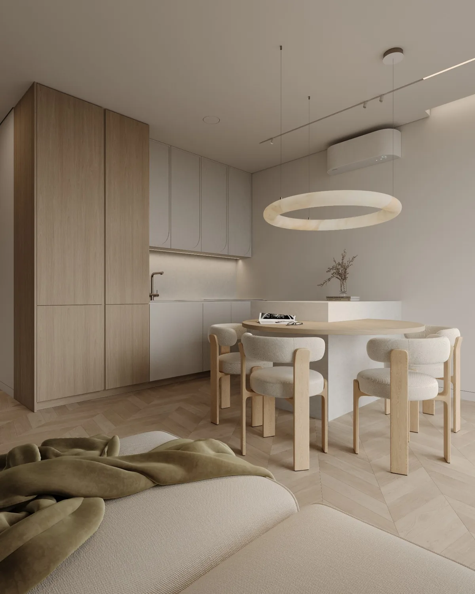
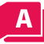
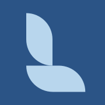
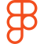
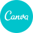
Interjero projektas nuo idėjos ir techninių brėžinių iki įgyvendinimo. Pagrindinis užsakovės lūkestis buvo sukurti elegantišką, modernų minimalistinį interjerą be nė vieno juodos spalvos elemento. Todėl kontrastus pakeitė šviesus ąžuolas, švelnios faktūros ir paslėpta šviesa, kurie visus kambarius sujungia į vieną ramią visumą. Lenktos linijos kartojasi nuo virtuvės fasadų ir apvalaus stalo iki arkos formos darbo stalo kojų, todėl minimalizmas čia šiltas, o ne šaltas. Šiuo metu meistrai interjerą įgyvendina pagal projektą.
Interjero projektas Kaune nuo objekto matavimų iki įgyvendinimo. Butas buvo skirtas pardavimui, todėl kiekvieną sprendimą derinau su ribotu biudžetu ir savininkų lūkesčiais, o darbus planavau taip, kad interjeras būtų įgyvendintas kuo greičiau.
Idėjinės vizualizacijos, pagal kurias buvo įgyvendintas butas Kaune.
Įmonės biuras, kurtas kartu su dizainere Lidia. Pagrindinis projekto tikslas buvo seno veterinarijos pastato interjerą paversti šiuolaikišku ir moderniu. Šiuo metu meistrai biurą įgyvendina pagal projektą.
Kartu su „Expoera“ projektavau stendus, kuriuose Lietuvos įmonės pristato savo produkciją tarptautinėse parodose. Bendrame stende „Lithuania“ kiekviena įmonė turi savo zoną, o visas jas jungia didelis žalias portalas, todėl iš toli matyti, kad tai vienas Lietuvos stendas.
Muziejaus atnaujinimo konkursas, II vieta. Mansardoje ekspozicija veda lankytoją ratu pro liečiamus ekranus, į grindis įmontuotą maketą ir supynes, o pirmajame aukšte lankytojus pasitinka priėmimo zona.
244 m² biuro koncepcija: itin modernus, šiuolaikiškas biuras, kuriame drąsiai naudojamos spalvos. Bordo virtuvė, samanų šviestuvai ir tamsios akustinės lubų grotelės kiekvienai zonai, nuo registratūros iki poilsio patalpų, suteikia savitą nuotaiką.
Konkursinis viešbučio ir jo liukso kambario projektas, kurtas kartu su „Shori“ komanda. Rengiau baldų išdėstymo planus ir vizualizacijas.
Registratūra, kirpimo vietos, baras ir procedūrų kabinetas. Šviesus akmuo, medžio lamelės ir paslėptas apšvietimas kuria erdvę, kurioje pirmiausia norisi atsikvėpti.
Pirmieji darbai, sukurti su ArchiCAD: virtuvė, svetainė ir vonios kambarys. Nuo jų prasidėjo mano kelias interjero dizaine.